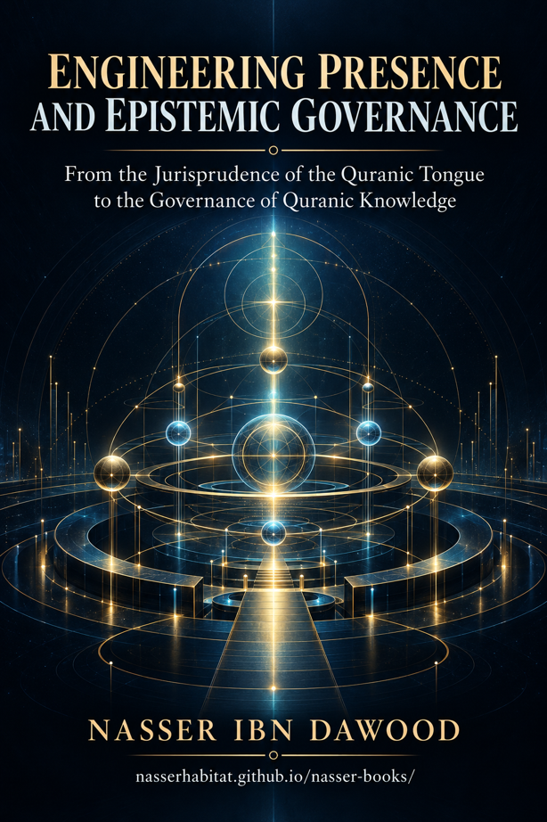

Nasser Ibn Dawood

Text extracted from the author-supplied Word edition; consult the original source.
Preparing the reader…
ENGINEERING PRESENCE AND EPISTEMIC GOVERNANCE
From the Jurisprudence of the Quranic Tongue to the Governance of Quranic Knowledge
Nasser Ibn Dawood
A Condensed Conceptual English Edition
I. The Global Knowledge Manifesto
Knowledge is a universal right. The author firmly believes that wisdom should not be locked behind paywalls or language barriers.
Global Access Policy: All books in this library are available for free in multiple digital formats (PDF, HTML, DOCX, TXT).
The Digital Library: As of early 2026, the collection hosts 68 volumes (34 in Arabic and 34 in English), fully optimized for AI-assisted research and digital archiving.
Official Platforms:
Main Website: nasserhabitat.github.io/nasser-books/
GitHub: nasserhabitat/nasser-books
II. Translator’s Note: The Bridge of Meaning
This English edition is a condensed conceptual adaptation. It is not a word-for-word translation, but rather an “extraction of essence.” It presents the core philosophical framework in accessible English, omitting the exhaustive linguistic debates and classical references found in the original Arabic text.
For the academic researcher: The original Arabic version remains the primary source for comprehensive linguistic analysis, detailed exegesis (Tafsir), and the complete bibliography.
Scope of This Edition
This edition preserves the governing architecture of the Arabic version V1.2: the distinction between revelation and human reading; the levels through which meaning becomes present; the cognitive bridges that justify every transition; the ranking and attribution of claims; resistant testing; and the feedback loop that turns error into learning. Detailed Arabic corpora, extended linguistic debates, and most documentary apparatus remain in the original edition.
Contents
Introduction — Why Knowledge Needs Governance
Presence: From Text to Civilization
Revelation, Interpretation, and the Rank of a Claim
The Law of No Leap: Building Cognitive Bridges
The Eleven Levels of Presence
From Reading to Auditing the Reading
Falsifiability, Resistant Evidence, and Intellectual Humility
The Safety Standard and the Feedback Loop
From Corrected Knowledge to Responsible Civilization
Applied Model — Mīzān, Tazyīn, and Zinā
A Practical Protocol for Researchers and Institutions
Conclusion — A Governed Path to Meaning
Glossary and Claim-Rank Key
Introduction — Why Knowledge Needs Governance
A sacred source does not make every human model built from it sacred.
The central problem of Quranic interpretation is not the existence of human reasoning; interpretation is unavoidable. The problem begins when the reader forgets where the text ends and the reader’s construction begins. A lexical observation may be promoted into a universal law. A useful model may be described as if it were the Quran’s own wording. A contemporary policy may be granted religious authority merely because it was inspired by a religious value.
This book proposes epistemic governance: a disciplined system for tracing how a claim moves from source to explanation, induction, inference, model, application, and measurable effect. Governance does not silence reflection. It protects reflection from disguising itself as revelation. It also protects revelation from being blamed for conclusions that belong to a limited reader, a historical institution, or a failed implementation.
The project asks two linked questions:
How does a Quranic truth become present in language, understanding, awareness, action, and civilization?
How can every stage of that movement remain auditable, reversible, and open to correction?
The Foundational Distinction
Layer
What it does